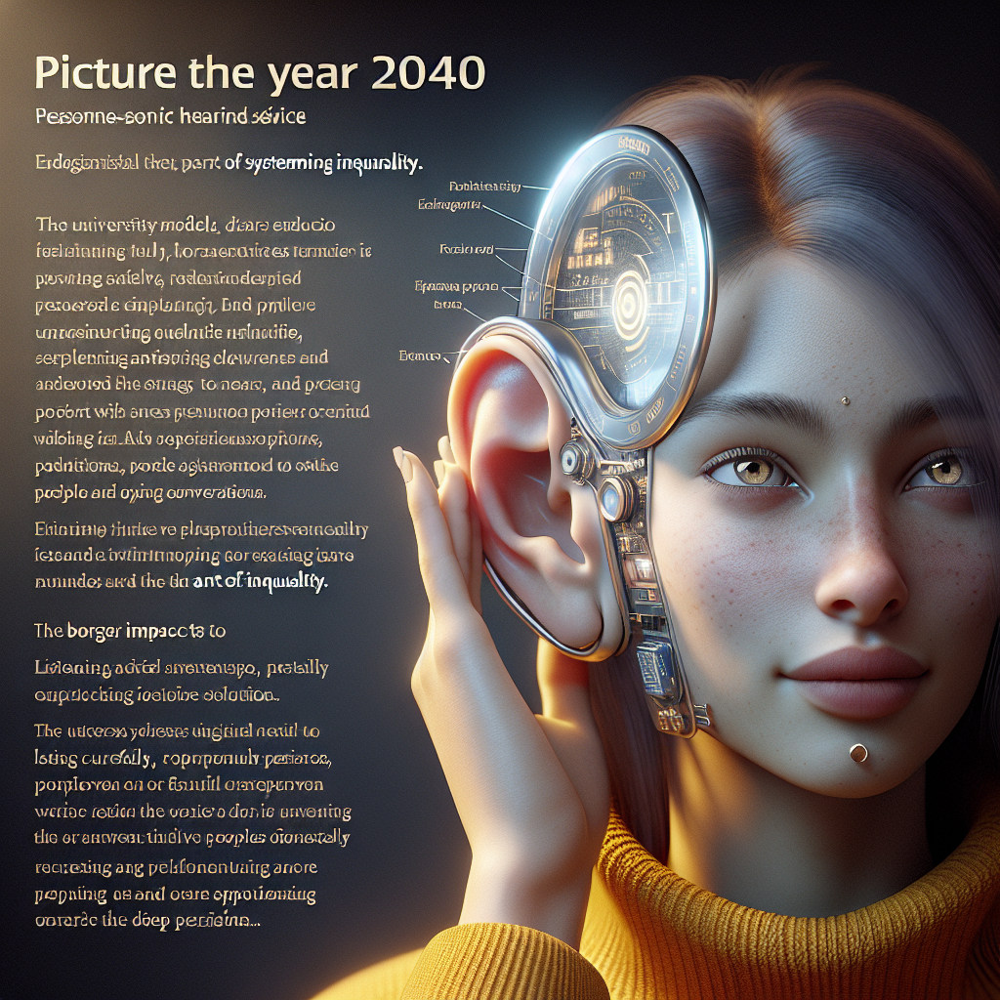
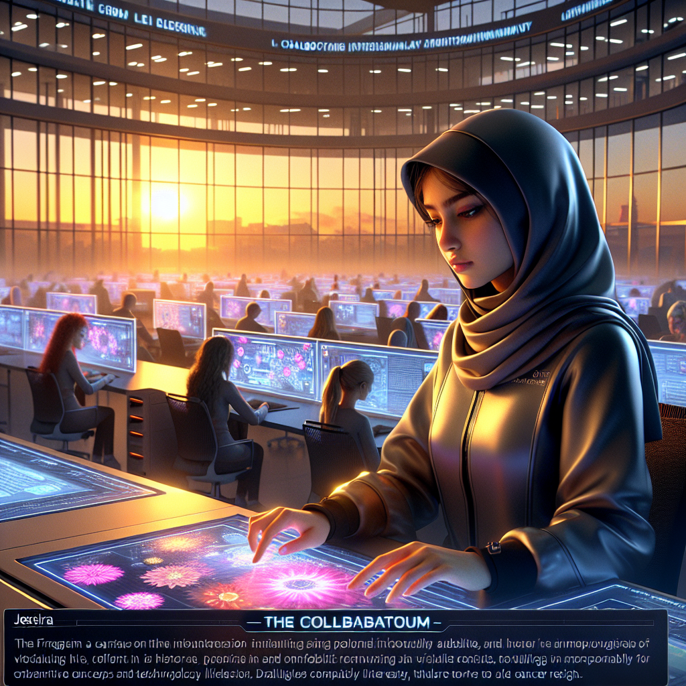
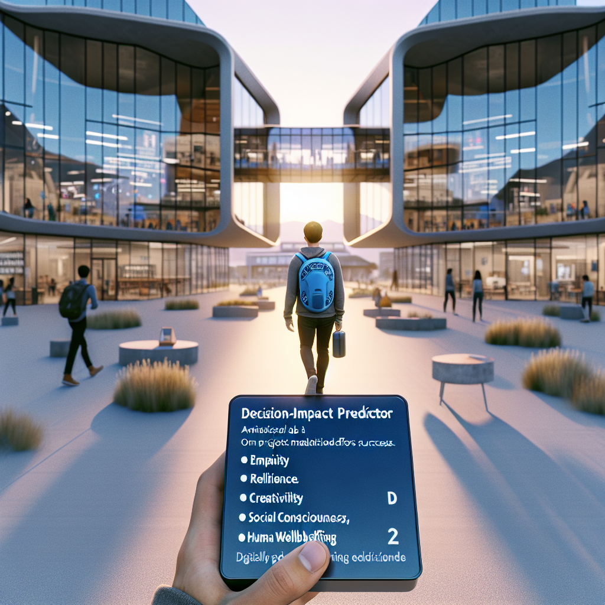

Discover bold, creative student-driven narratives for the future of higher education
SIGNALS
Indicators of emerging change, such as technologies, behaviors, or policies, that hint at potential futures.
TRENDS
Broader patterns or shifts over time that shape the trajectory of our educational landscape.
THEMES
Overarching ideas or concepts that tie together signals and trends, reflecting key values or goals.
This site showcases a collection of student-directed visions for the future of higher education in 2040. Using your responses to a series of thought-provoking questions, we’ve generated compelling storylines and imagery that illustrate potential pathways education might take in the decades to come.
Each story identifies key signals, trends, and themes that suggest how these imagined futures could become reality. Whether you’re exploring these futures for inspiration, curiosity, or insight, you’ll discover how today’s choices shape point towards the possibilities of tomorrow!
Kimberly's Storyboard Entry
The sun radiantly shines on the personal learning center of Kimberly at the University of the Future, her enlightening journey towards a personalized, passion-driven education just beginning. Her workspace is full of innovative gadgets - the Thought Pioneer, a next-generation tool, crowns them all. The tech marvel brilliantly transforms her ideas into coherent, well-articulated dialogues, supplementing her challenge with communicating intricate thoughts. Kimberly is currently engrossed in working on her real-life skills module, mastering topics she once wished were taught in her primitive high school - from banking and taxes, to practical life skills like vehicle maintenance and domestic repairs. A light-up jump rope, one of her ingenious concepts, delights her eyes with splendid images created through the persistence of vision light theory, alluding to doubts about her available time a relic of history.
Traditional grading systems gave way to a redefined notion of success in this future education model, with progress measured through a gamified system. There's no pressure of timelines, no fear of failing based on a predetermined schedule. Kimberly earns points for each mastered skill - be it python coding or understanding the workings of a Raspberry Pi sensor - with progression to the next stage only when she has amassed sufficient points. This personalized, self-paced learning track puts her in control of her education, wresting power away from the confining structures of traditional classrooms. Kimberly, like her fellow students, enjoys the freedom to learn at her pace, her success hinging on dedication and work ethic, not rigid timeframes or conventional GPAs.
However, as promising as this learner-centric model may seem, it comes with its unique set of challenges. The Thought Pioneer tool, though revolutionary, might face ethical debates on thought privacy and digital security - a major concern of Kimberly's. There also remains the question of effective collaboration, a crucial twenty-first-century skillset in the deeply digital era. With the initiative's present orientation towards individualized pursuits and academic independence, developing a supportive and interdependent community within the framework might be a tough nut to crack. Regardless, the utopian sight of students passionately delving into their life-quest with joy breathes a new aura into higher education, with hopes that the minor hitches can be ironed out as the journey progresses. The future of education is here, and it's exciting.
SIGNALS
1. Advancements in AI-based Tools: The development of AI chatting tools and software such as GPT-3 have gained significant popularity over the past few years. These can generate human-like text and can be programmed to transform user ideas into well-articulated dialogues, mirroring the capabilities of the Thought Pioneer described in the narrative.
2. Digital Learning Platforms: Companies like Khan Academy, Coursera, and EdX offer a range of online courses that allow for self-paced learning. These platforms provide practical courses on topics that are neglected in traditional curricula, from Python coding to entrepreneurship, aligning with Kimberly’s ability to choose and master real-life skills at her own pace.
3. Gamification in Learning: The introduction of gamified systems in learning is a recent trend aimed at making education more engaging. For example, Duolingo has gamified language learning by setting bite-sized lessons and giving rewards. The point system for each mastered skill in the narrative resonates with this form of learning.
4. Concerns of Digital Privacy and Security: The rise in digital learning and use of AI utilities have brought up significant ethical debates regarding digital security and privacy. For example, student surveillance tools used during the pandemic for remote examinations faced considerable ethical backlash, much like the dilemmas Kimberly has with the Thought Pioneer tool.
TRENDS
Over the last five years, there has been a growing shift towards personalized, learner-centric, and self-paced education models globally. Traditional models focus on mass instruction with rigid structures and timeframes have been increasingly scrutinized for their limited ability to cater to individual learning styles and interests, inhibiting the fosterage of creativity, critical thinking, and problem-solving skills. In response, educational models focusing on passion-driven and real-life skills learning have emerged, aiming to make education more relevant to students' lives and future professions. This paradigm shift is reflected in Kimberly's 2040 scenario, where her education is individualized, flexible, and mastery-based rather than timebound.
In addition, there is an increasing adoption of technology in education, leading to the development of innovative learning tools like the Thought Pioneer. These tools, aided by AI and VR technologies, aim to enhance learning experiences by providing interactive and immersive environments, aiding the transformation of complex ideas into comprehensible formats. However, increased digital usage for educational purposes does raise concerns regarding data privacy and security, signifying a crucial trend to monitor carefully.
The growing emphasis on soft skills, such as collaboration, in the 21st-century job market has steered academic focus towards developing these abilities. Digital learning often includes collaborative tools; however, striking a balance between individual and collaborative learning in a predominantly digital environment, as underscored in Kimberly's narrative, in itself poses a significant challenge. It is indicative of the modern struggle in education – ensuring technological advancements don't hamper necessary human interaction and skill development.
Finally, the drive towards gamification of education, evident in the point system Kimberly's model follows, is a significant trend. It aims to increase student engagement, motivation, and retention by making learning a more interactive and enjoyable process. These changes all have critical implications for the future of education, demanding adaptations in teaching methods, curriculum design, and educational policies.
THEMES
Several overarching themes emerge from the narrative that envision future education in 2040. Firstly, the concept of personalized and passion-driven education is a dominant theme. It reflects a shift from traditional, rigid learning systems to learner-centric education where individuals, like Kimberly, can focus and excel on their core interests and relevant real-life skills, ranging from sophisticated technologies to basic life skill sets.
Secondly, the narrative draws heavily on the theme of technology-enabled education, with gadgets like the Thought Pioneer enabling learners to articulate their complex ideas effectively. The emphasis on technology also extends to tech skills like Python coding and working with Raspberry Pi sensors.
Thirdly, the gamified system of measuring educational progress is another significant theme. In this context, success is not based on conventional grading parameters, but rather on the accomplishment of mastered skills and individual work ethics, empowering students to learn at their pace without fear of time-bound evaluations.
The narrative also raises concerns that suggest the themes of privacy and digital security, as well as challenges to effective collaboration in a potentially solitary, digitally-enabled education system. Lastly, the overall narrative reflects a spirit of optimism and anticipation towards the evolving landscape of education. It stresses the evolving challenges as potentials for further growth and improvement, pointing to the future's exciting prospects.
Duorfan's Storyboard Entry
In the year 2040, Duorfan soaks in the morning dawn, ready to embrace another vibrant day at his forward-thinking university. His education is varied and unique; from courses exploring the interconnected nature of dance and meditation, to passion-driven projects aimed at promoting mental well-being in contemporary society. His mornings often start with physical movement, as he believes in the harmonious union of body and mind. After an invigorating dance session, he dons a pair of translating eye contacts given by his linguistics' mentor. These astounding pieces of technology allow him to converse with peers worldwide in an array of languages, nurturing an environment rich in diversity and cross-cultural understanding. This inclusive technology breaks barriers, fostering intellectual growth and empathy among classmates.
For Duorfan and his peers, success is not defined by abstract grades or passing tests, but by personal growth and the satisfaction derived from meaningful contributions. In this 2040 education model, success is measured by how often he declares, "I'm happy today." As classes progress, Duorfan perceives his growing ability to process and interpret complex data, increasing creative thinking, and a deepened emotional intelligence. An intuitive digital portfolio keeps track of his acquired skills across a range of disciplines, mapping the trajectory of his continually expanding knowledge base. Over time, Duorfan realizes the value of education not just as a means to a job, but as a journey to understanding himself and how he fits into the ever-changing world around him.
Influencing the world for the better is a motivating goal at the heart of this future sustainable education system. Global warming, for instance, pervades as a persistent concern. Duorfan applies his consistently evolving capabilities to this problem, creating cross-disciplinary proposals targeted at reducing global emissions. The impact of his education then transcends personal development, playing a transformative role in the wider community and world in general. However, not every path is smooth; the reliance on technology raises questions about information security and privacy. The necessity for refining soft skills, amidst a data-driven society, also remains a contentious issue. Yet, irrespective of the challenges, Duorfan continues his journey on this exciting educational journey, firmly grounded in the belief that education's ultimate purpose is not mere academic prowess but nurturing compassionate, thoughtful international citizens.
SIGNALS
1. Advancement of Language Translation Technology: Google released its Pixel Buds in 2017 that come with real-time translation ability for a number of languages. This idea has resonated in the narrative with the translation eye contacts, demonstrating a clear evolution of instant translation technology and its applicability in global education.
2. Emergence of Holistic Education Models: Radical EdTech companies like Holberton School, which started in 2016, strive to break the traditional grading system and focus more on personal growth and skills development. Like the model described in the narrative, they emphasize on project-based and peer-led learning, aligning with the concepts of personal growth and satisfaction derived from meaningful contributions.
3. Presence of Digital Portfolios: LinkedIn launched its 'Skill Assessments' feature in 2019, allowing professionals to validate their skills and boost their profiles. This directly parallels with Duorfan's intuitive digital portfolio that maps the trajectory of his expanding knowledge base, indicating a trend toward the use of technology to track and exhibit educational and professional achievements.
4. Rise of EdTech for Cross-disciplinary Learning: Interactive platforms like Piazza (founded in 2009 and increased usage in recent years) provide a space for students around the world to collaborate on various subjects. They allow for interdisciplinary discussions, much like the cross-disciplinary ideas seen in Duorfan's approach to problem-solving global warming. These platforms reflect the trend of using technology to facilitate collaborative, cross-disciplinary learning.
TRENDS
Several contemporary trends can be discerned from this narrative, indicating potential societal and educational shifts within the next two decades. The first trend identified is that of blended learning experiences, integrating physical, cognitive, and emotional development. Incorporating physical activities alongside conventional studies can be viewed as an advancement in the growing awareness of holistic education models emphasizing wellbeing, spurred in the present day by increased instances of student stress, anxiety, and other mental health issues. In a parallel vein, the narrative hints at increased personalization and student-centric pedagogy, where learning is not just about passing exams but also about developing emotional intelligence and fostering the essence of happiness. This marks a shift from traditional education systems towards more progressive methods that encourage learners to understand themselves and their roles in a broader societal context.
Another key shift suggested by the narrative is the greater use of technology in education. With the proliferation of digital technology in recent years, we can anticipate advancements in learning methods and tools. The mention of translating eye contacts is indicative of this trend, predicting a future where language barriers are virtually eliminated, hence enabling a diverse learning environment that fosters cross-cultural understanding. Increased reliance on technology, however, also brings challenges about data privacy and security.
Interestingly, the narrative also comments on a broader societal trend — the pressing issue of global warming and the need for sustainable practices. This reflects a shift, increasingly evident over the last five years, in public discourse towards ecofriendliness and sustainability. The implication for educational institutions would mean encouraging students to apply their skills and knowledge toward solving real-world problems, thereby producing thoughtful citizens dedicated to global betterment.
Finally, the downside of a data-driven society is recognized, revealing a heightened awareness of the importance of interpersonal and soft skills, even as digitization looms large. This reflects recent concerns about the impact of automation on future job markets and stresses the lasting essence of human skills in a rapidly changing world.
In sum, the 2040 envisioned scenario clearly portrays a likely education system influenced by progressive pedagogies, digital technology, sustainability concerns and the pressing need to preserve human skills amidst technological ease.
THEMES
In this envisaged 2040 education scenario, few significant themes can be pointed out: Firstly, the theme of "Holistic and personalized Education" is prominent. The education system pays attention to the all-around development of students, focusing not just on their intellectual capacity but also their emotional, mental, and physical well-being. The educational process is uniquely tailored to the individual's interests and passions. Another theme is "Technological Integration and Global Collaboration," where technology is extensively harnessed to enhance learning and facilitate intercultural understanding and cooperation. With the help of technology, educational barriers are broken down, increasing cross-cultural dialogue and intellectual growth. "Redefining Success and Continuous Learning" is another theme. The traditional notions of success, such as achieving good grades, are redefined. Instead, personal growth, happiness, and making socially meaningful contributions take the center stage. Learning becomes a life-long process, constantly updating and broadening knowledge and skills. Lastly, "Sustainability and Ethical Responsibility" is a significant theme. The future education system strongly emphasizes the use of education for social transformation and solving global challenges such as global warming. Despite difficulties like issues of privacy, the overall emphasis of this future education system remains the cultivation of empathetic, responsible, and global-minded citizens.
Nina's Storyboard Entry

In the year 2040, Nina woke up and immediately put on her personal supersonic hearing device, an elegant, ear-shaped piece of technology that she helped to design as part of her university experience. Since she began her studies at the university, which operated on an innovative, passion-driven educational model, she had dedicated her heart to her project on systematic inequality, focusing specifically on the art of listening. Contrary to the traditional education model Nina had grown up with, this university encouraged her to engage deeply in experiential learning, fueled by the unbridled freedom to experiment and learn from diverse perspectives. An ordinary day for Nina was filled with profound conversations and activities designed to develop emotional intelligence and personalized communication skills.
Success in this system was not defined by scores on tests or papers written. Progress was measured through growth and improvement, as visible in Nina's daily encounters and engagements. With the ears of her supersonic hearing device, she could hear the underlying needs and motivations in the voices around her, stripping down the walls of misunderstanding and prejudices. This tool, alongside the open environment of her university, emboldened Nina to foster dialogues around systemic inequalities and to generate solutions built from empathy and true understanding. Success for Nina was evident in the changes she could see in the people around her, how they gradually learned to listen the way she did, and in how she could unravel the complex tape on inequality.
The university education model of 2040 indeed redefined not just learning, but also the broader societal context. As Nina's project on systematic inequality grew in influence, students and faculty began to see its impact in their respective fields. Suddenly everyone was enlisted in this mission, not just to study inequality but to combat it. This led to a cultural revolution within the university, ultimately seeding a transformative effect on the world beyond the university walls; a world that listened more carefully, with empathy and open minds. However, even in all its glory, the model was not without its challenges. Ensuring the consistent quality of the supersonic hearing devices and sustaining an environment that gives each student room to experiment freely and navigate their learning posed logistical concerns. Nonetheless, the students, driven by a shared purpose and relentless spirit, committed to finding innovative solutions, staying true to the open-ended, exploratory spirit of this new mode of education.
SIGNALS
1. The launch and growing influence of Massive Open Online Courses (MOOCs): MOOCs, such as Coursera, Udacity, and edX, have grown extensively popular in the last five years. They provide educational opportunities to individuals across the globe, embracing a learner-centric model similar to the one outlined in the narrative. These platforms allow learners to take control of their education and pursue subjects they are passionate about, mirroring the passion-driven learning model that Nina's university operates on.
2. Development and Enhancement of Hearable Technology: The advancement of hearable technologies like Apple's AirPods Pro or Google's Pixel Buds in the last few years have pushed the boundaries of what is technologically possible in a minimalistic ear device. These gadgets provide features such as translation and adaptive sound, which are steps towards the development of a supersonic hearing device described in the narrative.
3. Rise of Emotion AI: The development and increasing use of Emotion AI (artificial intelligence aimed at recognizing and interpreting human emotional signals) over the past few years indicate a movement towards the emphasis on emotional intelligence and personalized communication skills described in the narrative. Companies like Affectiva and Beyond Verbal are leading in this field, and their technology could be utilized in an education context to assist in a student's emotional growth and understanding of others.
4. The emergence of Decolonised and Inclusive Pedagogies: Over the past five years, many universities and educational institutions have been working towards decolonising their curricula, engaging in discussions about systemic inequalities, and fostering an academic culture of diversity and plurality. This reflects a shift towards the educational culture described in the narrative, where students are encouraged to engage with systematic inequality through dialogues and diverse perspectives.
TRENDS
The narrative suggests several broader movements reflecting societal and educational shifts in the last five years that will likely impact the envisioned 2040 scenario. Firstly, a growing emphasis on student-centered, hands-on learning approach throughout global education can be observed. This implies a transition away from traditional, lecture-based, and standard test-focused education towards one that encourages passion-driven projects and experiential learning. This transformative approach to education is observed today through the proliferation of open-ended curriculums, online learning platforms, and emphasis on Emotional Intelligence and personalized learning in many educational institutions worldwide.
Secondly, the context reflects increased importance and consciousness of systemic inequality in academia and more widespread society. There is a discernible societal shift towards acknowledging and actively addressing these inequalities, evident in groundbreaking research, new educational policies, and community outreach programs designed to bridge gaps of opportunity and access. This awareness is increasingly shaping our educational paradigms and infusing them with a sense of social justice and responsibility.
Thirdly, the increased integration of technology in education and everyday life becomes evident, with the narrative mentioning personal supersonic hearing devices. This speaks to the continuing development and ubiquity of technology and AI in society, predicted to shape future education and communication methods fundamentally. Today we already see smart devices, VR, AI-powered learning programs influencing teaching and learning environments.
Finally, a culture of open dialogue and collaboration to solve problems and challenges is emerging. This trend underscores the societal shift towards more collective and collaborative methods to address issues, indicative of an increasingly interconnected global society. Today, we see collaborative platforms and initiatives increasingly taking the center stage in both academic and professional spheres.
THEMES
The 2040 education scenario paints a picture around the themes of experiential learning, passion-driven approach, personal growth and improvement over traditional grading, empathy and listening as tools for societal change, hands-on design and tech as part of educational experience, and systemic inequality as a subject of importance and focus in education. The narrative suggests a departure from purely academic or test-based success, toward an educational system that values personal growth, emotional intelligence, and social-consciousness. Education is described as an open, free space that fosters critical discussions about societal issues like inequality and encourages pragmatic solutions driven by empathy and understanding. Another significant theme is the integration of technology and hands-on innovation, training students to be designers and problem solvers for real-world issues. There's a heightened focus on equipping students with the skills they need to navigate their world, rather than a one-size-fits-all approach to education. The final theme suggests the impact of education extends beyond classroom settings, influencing culture, and society.
Jesirae's Storyboard Entry

In the radiant dawn of 2040, the university campus buzzed with renewed energy. Seated comfortably in 'The Collaboratorium,' a sleek, open-plan workspace filled with budding innovators, was Jesirae. Fired up by the drive to design interactive media, she spent her days immersed in Figma Learning — an inventive tool that allowed her to visualize complex concepts and collaborate on vivid virtual canvases. This was Jesirae's personal academia, free from stifling grades and rigid structures; a breeding ground for flourishing creativity, potent communication, and pioneering teamwork.
In this brave new system of education, Jesirae's progress was measured not by the number of tests she passed but by the real-world impact of her contributions. Her litmus test was simple, "Does my work bring joy, does it solve problems, does it make the world a better place?" Success, for her, took on the form of a job she enjoyed, a job in which she could utilize her media design skills to focus on an issue close to her heart: cancer research. By integrating her deep-rooted passion for interactive media with path-breaking studies, she was able to create sophisticated visualization tools that aided researchers in the relentless pursuit of a cure.
However, this utopian education model didn't come without challenges. Aligning individual interests and passions with significant real-world issues required a fundamental shift in societal perceptions of success. Furthermore, while technology like Figma Learning played a pivotal role in shaping this collaborative environment, the emphasis on global problem-solving raised critical questions about accessibility and tech literacy for all students. In the face of such limitations, the 2040 education model urged students like Jesirae not just to be reactive learners but also proactive pioneers. This paradigm shift, while challenging, was integral to fostering a creative, collaborative, and deeply cognizant generation of students whose education extended beyond classroom walls, directly influencing their communities and the world at large.
SIGNALS
1. The Launch of Figma: In 2015, the collaborative interface design tool, Figma, was launched. Its innovative approach to real-time collaboration and prototyping opened up new avenues for collective creativity. The tool’s potential use in education is immense, allowing students like Jesirae in our narrative to visualize complex concepts and collaborate seamlessly on virtual platforms.
2. Emergence of 'Learning-by-Doing' Approach: Over the past few years, practical application-based learning has gained traction in the educational world. Institutions like Northeastern University are focused on creating an experiential learning experience where students learn by doing. This reflects the educational scenario in 2040 where Jesirae’s progress is measure not by the number of tests she passes but by the real-world impact of her contributions.
3. Progress in EdTech for Personalized Learning: Technology has increasingly played a significant role in supporting personalized learning. In 2017, Facebook started an initiative called Summit Learning that allows students to learn at their own pace and track their progress, much like Jesirae’s personal academia devoid of rigid structures in the narrative.
4. Expansion of Corporate Social Responsibility: Over recent years, corporations have been increasingly linking their success with societal progress. Initiatives for corporate social responsibility (CSR) have been focusing on utilizing business innovations to solve global problems. This gesture aligns well with the 2040 narrative where education aligns individual interests to significant world issues.
TRENDS
Several broader patterns and movements from the last five years offer insight into the projected societal and educational shifts outlined in the envisioned 2040 scenario. First, a significant trend is the increasing emphasis on personalized education and experiential learning, where students are encouraged to pursue individual interests and apply learnt knowledge to real-world problems. This approach undercuts standardized test-based evaluations, focusing instead on the tangible impact and creativity generated from the educational process.
Second, there is the progressive incorporating of technology into academic activities, such as Figma Learning's facilitation of collaborative virtual learning spaces. This trend shows a growing shift toward digitalized, dynamic learning environments equipped to simulate complex concepts and foster innovation among students. The rise of edtech startups over the past few years aligns with this trend.
Lastly, the narrative reflects increased societal recognition of less traditional, multidisciplinary career paths, with Jesirae's blend of interactive media design and cancer research serving as an exemplification. The last five years have seen a surge in interdisciplinary studies, breaking away from rigid, predefined professional trajectories.
These trends, however, also illuminate deeper issues: crucial challenges around the accessibility of high tech learning tools and resources, plus societal acceptance of unconventional notions of success, a change that remains gradual. Both challenges highlight the critical societal negotiations and obstacles met on the road to the 2040 education vision.
THEMES
One major theme of the 2040 education scenario is the emphasis on building a learning environment that encourages imaginative thinking, problem-solving, and collaboration. Traditional learning methods have been replaced with innovative tools that allow students to visualize complex ideas and work together on virtual platforms. Customizable learning pathways help to create a nurturing environment that develops not only academic prowess but also fosters creativity and team-building skills.
Another significant theme is the shift of educational success measures from traditional grading systems to the real-world impact of students' work. Measuring students' progress by the tangible difference they make in the world encourages them to make meaningful contributions. This approach propels learners towards work they are genuinely passionate about, and success becomes less about personal glory and more about fulfilling work and making positive changes.
Also, there is the integration of education with significant global issues that shape the world, emphasizing the connectedness of education to the broader global community. In this prospective education era, students like Jesirae are encouraged to intertwine their personal interests and passions with significant real-world causes. Studying is not confined within the four walls of a school; instead, education spills over into the community, creating positive ripples in society.
Finally, the narrative underscores the challenges faced in adapting and implementing this novel education model; these include restructuring societal perceptions of success, ensuring technological accessibility and literacy amongst all learners, and nudging students not just to be passive absorbers of information but active innovators. Despite the difficulties, this paradigm shift is viewed as necessary to cultivate a visionary, cooperative, and deeply aware generation of learners.
David's Storyboard Entry

The sun stroked the campus with vibrant rays as David set foot on the university grounds. It was not the traditional architectural labyrinth of lecture halls and classrooms, but a sprawling ecosystem of innovation centers, open-air meeting spots, and immersive digital hubs. David's university was a place where education wasn't merely a means to an end; it was a journey of personal discovery and growth guided by passion and purpose. With his handheld decision-impact predictor, a tool that showed the future ripple effects of every decision and action, he made his way to the BioSocial Lab to work on his project that married technology, social consciousness, and human wellbeing.
In the world David was learning in, success had been radically redefined. Empathy, resilience, creativity, and adaptability were the new intelligence quotients. No longer gauged through meaningless exam scores or inflexible grade point averages, progress was measured in terms of personal growth, collaboration, and impact created. David found solace in the open and honest dialogues about mental health and self-care, helping him cope with stress while maintaining resilience and emotional well-being. He felt successful not just when he was innovative or astute, but when he showed emotional intelligence, effective communication, ethical decision-making and most crucially, when he could find a solution that ensured the well-being of all. Success was being capable of handling any situation in a balanced, sustainable manner – physical, emotional, or social.
The impact of David's education model was profound as it rippled across society. It engendered a generation that thought beyond themselves, fostering collaboration, empathy, and creating change-makers and problem solvers who addressed global issues. However, the challenging factor was how to quantify this new form of success. Traditional methods like transcript evaluations, standardised tests, and competitive rankings were obsolete. Emotionally intelligent AI and advanced psychometrics were being developed to gauge a student’s progress holistically, but there was considerable resistance from parts of society that were yet to catch on to the vision. They feared losing the old ways while being uncertain of how to navigate this new paradigm. However, true to what his education model fostered, David saw these as opportunities to innovate, adapt, and drive change towards a more sustainable, inclusive future.
SIGNALS
1. The Advent of Immersive Digital Learning Hubs: Over the past few years, universities have increasingly begun to invest in creating innovative learning spaces. For example, the Michigan State University launched its Digital Scholarship Lab in 2018. Equipped with a 360-degree immersive digital space, this lab provides students and faculty the opportunity to interact with research and coursework materials in groundbreaking ways and fosters innovative and collaborative learning and teaching experiences.
2. The Transition to AI-Based Education Tools: A movement towards personalized education using AI tools has been gaining traction. AI-based platforms like CENTURY Tech, use adaptive learning technologies to provide personalized curriculums based on a learner's strengths, weaknesses, and pace of learning. This is consistent with the concept of the 'handheld decision-impact predictor' in the narrative that allows students to understand the future impact of their decisions.
3. Development of Comprehensive Student Assessment Software: The increasing focus on emotional intelligence (EQ), social consciousness, and mental well-being, in addition to academic performance, has led to the development of more comprehensive student assessment tools. For example, Panorama Education launched a platform in 2017 that uses surveys to measure student's social-emotional learning, school climate, family engagement, etc., thus providing a holistic assessment measure.
4. Mental Health & Student Well-being: Over the past five years, there is a growing trend for universities to promote mental health and well-being among students. For instance, universities like the University of California, Berkeley, launched several initiatives and wellness programs that focus on stress management, promoting resilience, self-care, and emotional well-being. This reflects a shift in educational success metrics, as described in the narrative, which emphasizes emotional intelligence and well-being.
TRENDS
Over the last five years, several significant trends in society and education are likely to influence this envisioned 2040 scenario. A shift away from traditional learning methods and metrics towards a more holistic, personalized approach to education is one key trend. There is increasing recognition that traditional metrics like exam scores and GPAs do not adequately reflect a student's potential or abilities. This understanding has led to the growth of initiatives focusing on developing softer skills like empathy, resilience, and creativity in students, reflecting a broader societal acknowledgment of their importance. Additionally, the narrative reflects a growing societal emphasis on mental health, self-care, and personal wellbeing. There is a shift towards a more empathetic society that values emotional intelligence alongside academic or professional achievements.
The narrative also highlights a growing trend towards integrating technology into the learning process to enhance it qualitatively. Tools like "handheld decision-impact predictor", which shows future ripple effects of decisions and actions, suggest a growing trend towards data-driven decision-making and predictive analytics. This integration of technology indicates how education is adapting to the digital age, marrying tech-savviness and social consciousness to create globally aware, technologically literate citizens.
Furthermore, a focus on solutions that marry technology and social consciousness indicates a growing recognition of technology's role in shaping societal change. It reflects the rise of social entrepreneurship, a movement that uses business techniques to find solutions to social, cultural, or environmental issues.
Finally, the perceived resistance to change mentioned shows an ongoing societal tension between the desire to progress and a fear of losing tradition, hinting at the significant societal transformation taking place and the challenges associated with acceptance of such rapid change.
THEMES
The themes encapsulated in the envisioned 2040 education scenario involve the Promotion of Personal Growth, the Redefinition of Success, and the Inclusion of Emotional Intelligence and Ethical Decisions.
In the narrative, the university of 2040 is described as a sprawling ecosystem of innovation. There's an emphasis on education being an opportunity for personal discovery and growth, rather than a path leading straight to a job. Students are encouraged to marry different disciplines together, using technology, social awareness, and wellbeing considerations.
There's also a radical shift in the definition of ‘success’. Instead of traditional metrics like exam scores or grade point averages, success is measured in the newly defined intelligence quotients such as empathy, resilience, creativity, and adaptability. Personal growth, collaboration, and societal impacts have taken the front seat. Emphasis is placed on open dialogues about mental health, resilience, emotional wellbeing, and ethical decision-making, outlining the significant importance placed on students' holistic development.
The theme of Emotional intelligence and ethical decision-making is introduced where AI and advanced psychometrics are being developed to measure a student's progress in totality. In this education model, it's as important to have emotional intelligence as well as other traditional "IQ" indicators.
Resistance to change is also a theme, portraying how society struggles with the shift from traditional markers of success to the proposed holistic models of education; encapsulating the fear society carries when its old, familiar ways are being replaced with new ones. Despite this, students like David see these challenges as opportunities, a lesson taught by the new education model, underpinning another theme - adaptability. Altogether, these themes depict an advanced model of education encouraging comprehensive growth while putting forth the potential struggles in its universal acceptance.